Innovation Month
A map of squares became a gate.Antoni Gerges, Executive Creative Director · AntBrush
Two days of innovation on the municipality’s forecourt in Al Ain. The idea, the design and the build were mine.
Read more
Innovation Month 2024 for Al Ain City Municipality, part of the Department of Municipalities and Transport: two days, 21 and 22 February 2024, from 9:00 am to 2:00 pm, on the forecourt of the municipality’s main building in Al Ain.
The idea, the design and the build were mine, through AntBrush. Built with Halwan Advertising and Production.
The national campaign’s mark is a map drawn in squares. I took the square, gave it depth so it became a box, and stacked the boxes into a gate twelve metres wide and four high (39 ft × 13 ft).
The mark belongs to the national campaign. The idea came from it.
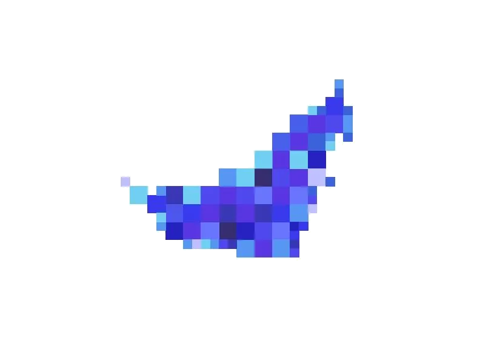
The first proposal, in January 2024, was a gate of boxes under a roof of triangles. The final design, of 2 February 2024, put one big truss over the whole street to carry the shades. That is what was built.
Inside, the walls are folded in a zigzag and carry the campaign’s mark. All the 3D renders are AntBrush’s.
Our presentation of 4 February 2024 set out the venue, the branding and the giveaways: badges, two trophy designs, one of them the mark as an object built of squares, and a gift box.
The films and photographs of the built site are my own, taken on my phone. Every picture on this page is shown whole.
19 December 2023: nine weeks out, the forecourt was empty. 18 February 2024: three nights before, steel. 21 February 2024: open.
A map of squares
became a gate.
The campaign’s mark, taken apart and built again.
The mark
The campaign’s mark is a map drawn in squares, large and small.
A square, with depth
Give each square depth, and it is a box.
The gate
Sixty boxes, stacked into the first proposal.
The zigzag wall
One print, folded. It reads whole from the front, and breaks as you pass.
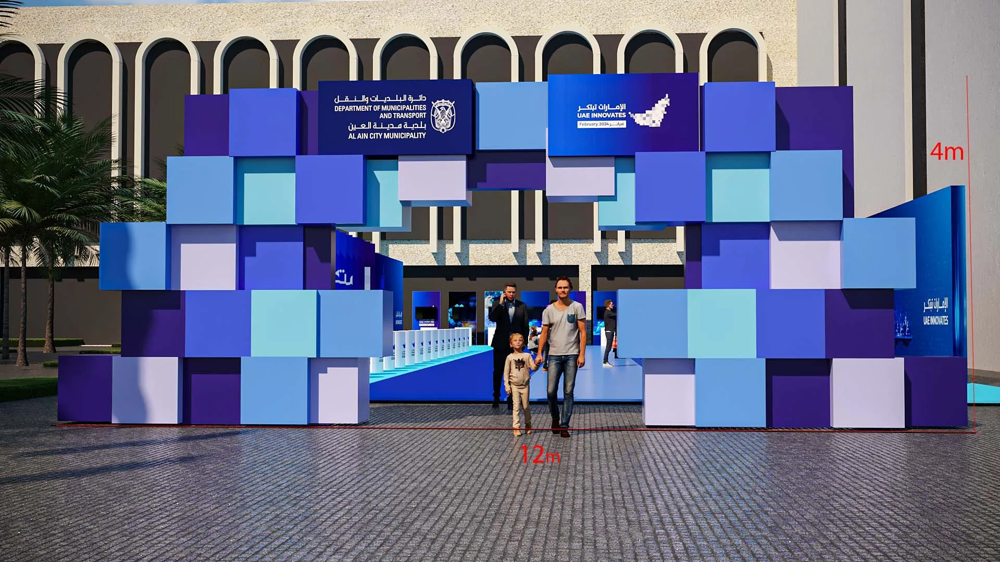
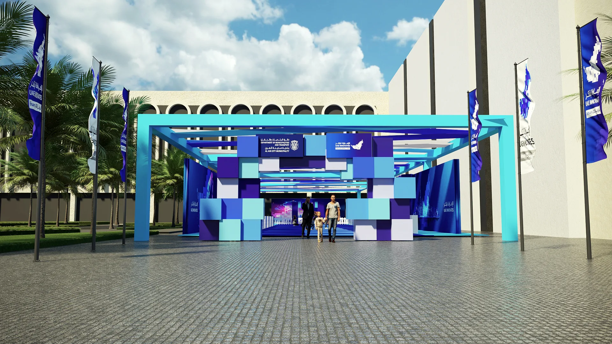
Designed, then built · 01 / 08The whole area.
The final design: the gate, the flags, and a truss to carry the shades.3D render · AntBrush · 2 February 2024
Built.
The same forecourt, the morning it opened.My own film · 21 February 2024
 Designed, then built · 03 / 08
Designed, then built · 03 / 08The gate.
Squares from the mark, stacked into a gate.3D render · AntBrush · 2 February 2024
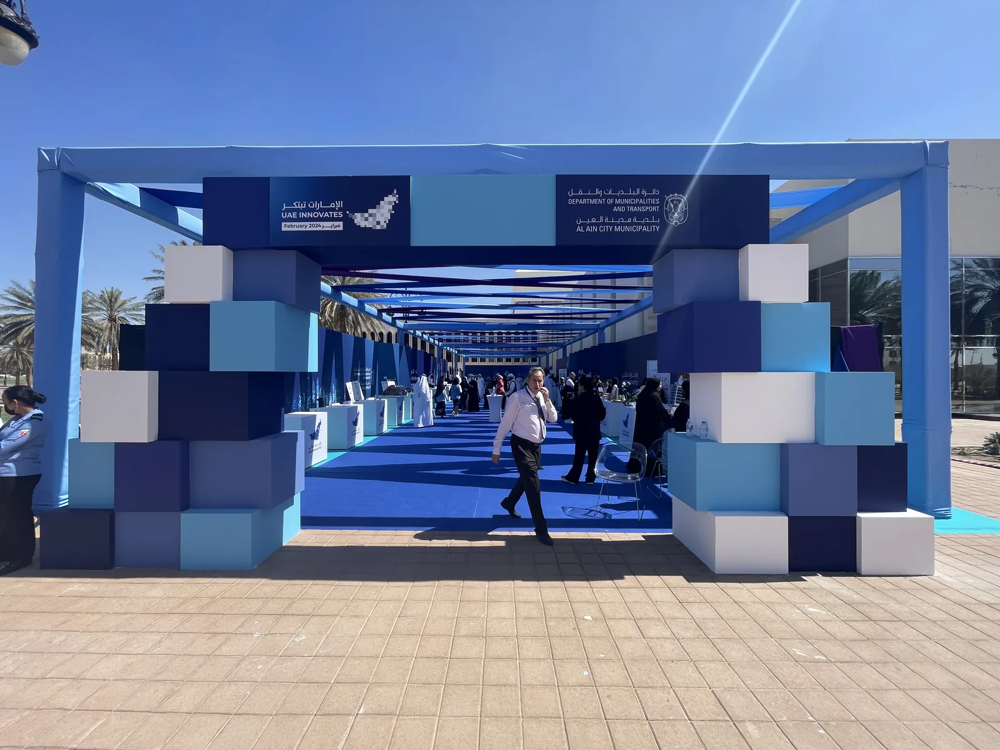
Designed, then built · 04 / 08Built.
The same gate, whole, on the opening morning.My own photograph · 21 February 2024
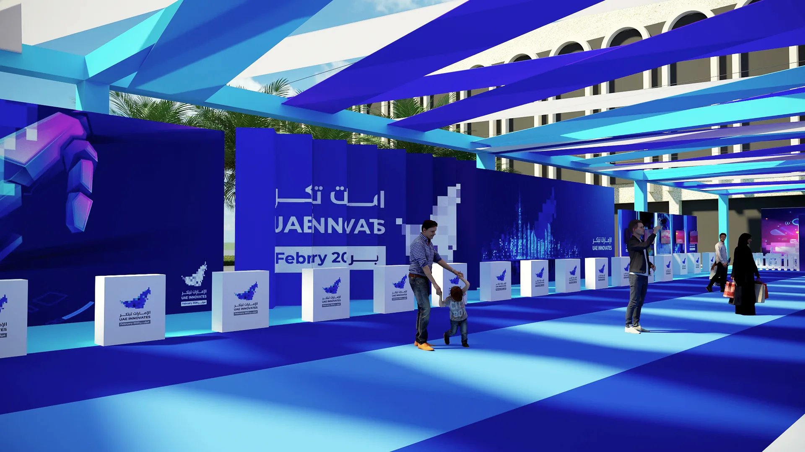
Designed, then built · 05 / 08Inside.
One long street under the shades.3D render · AntBrush · 2 February 2024
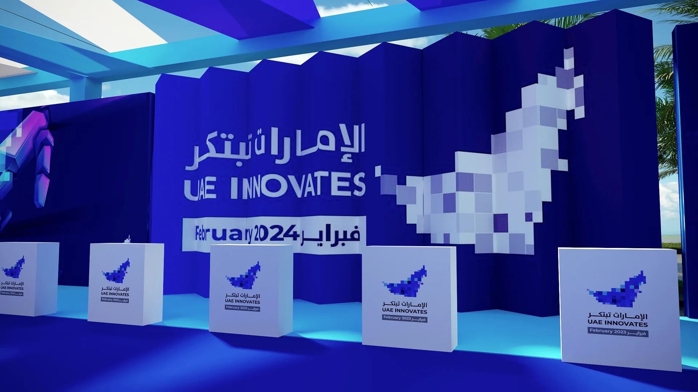
Designed, then built · 06 / 08The backdrop.
A wall folded in a zigzag, carrying the campaign’s mark.3D render · AntBrush · 2 February 2024
Built.
The same walls, the first morning.My own film · 21 February 2024
Full.
Under the shades, the first morning.My own film · 21 February 2024
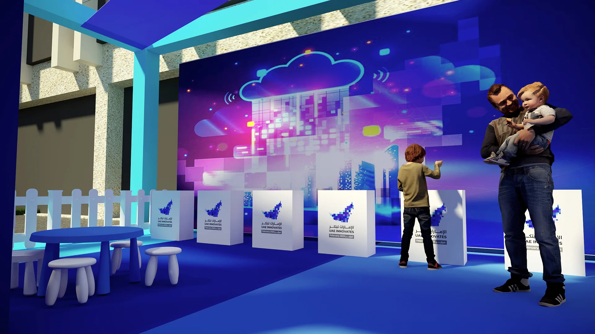
The details · 01 / 06The children’s corner.
A corner of its own for the youngest visitors.3D render · AntBrush · 2 February 2024
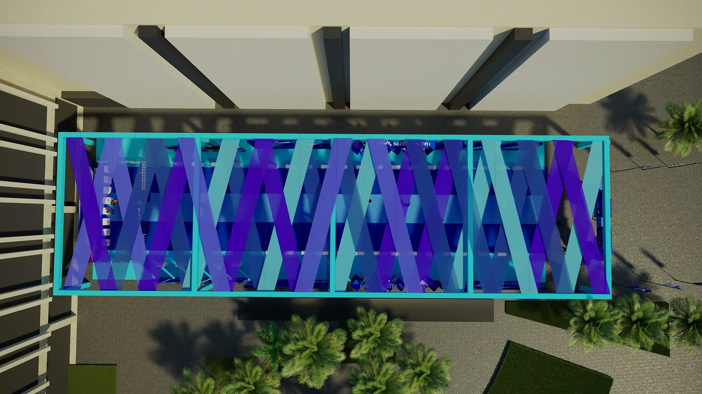
The details · 02 / 06From above.
One truss, one street, strips of shade.3D render · AntBrush · 2 February 2024
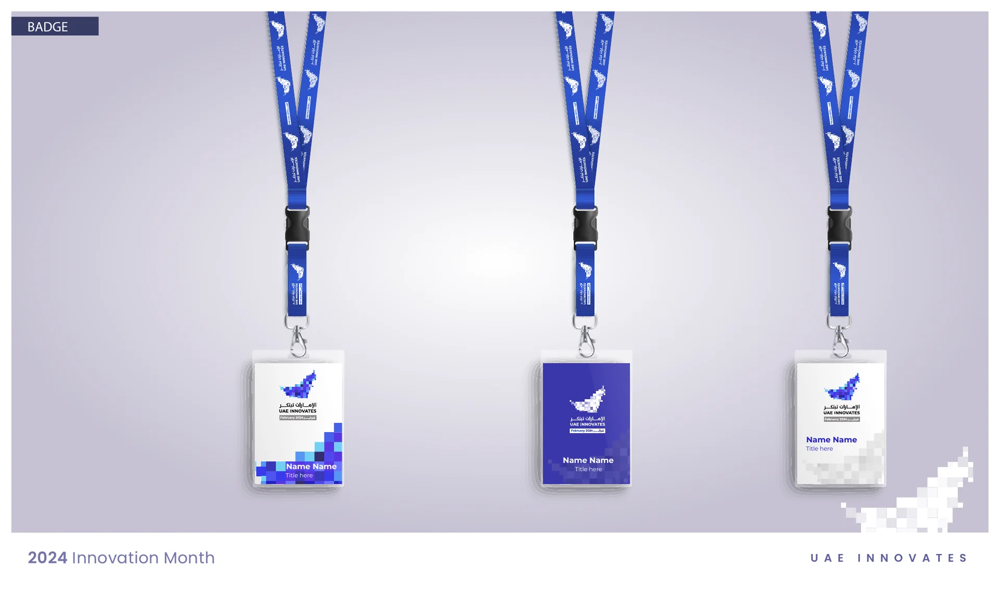
The details · 03 / 06The badge.
The mark on every visitor.From our presentation · 4 February 2024
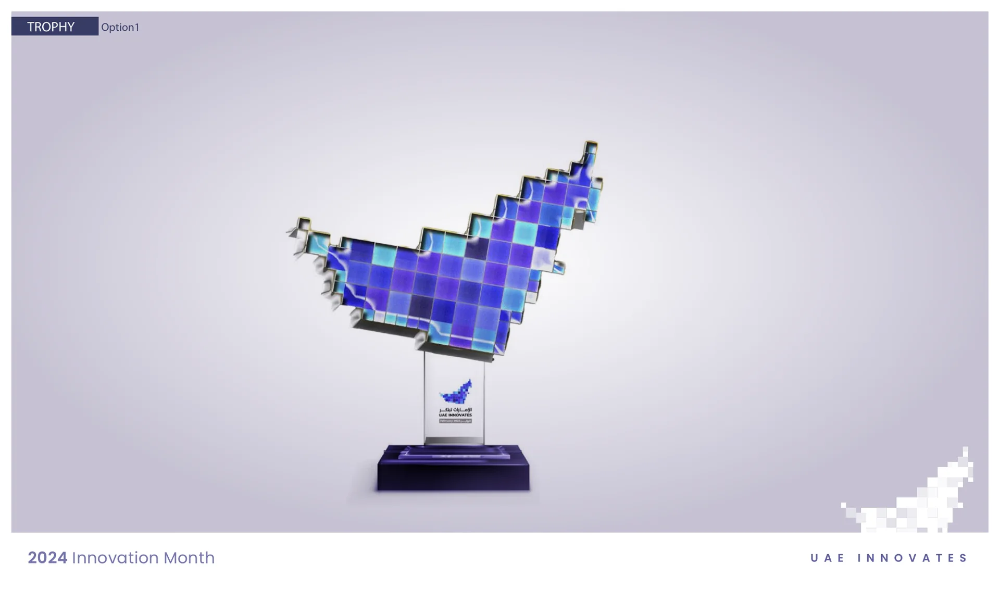
The details · 04 / 06The trophy.
The mark as an object, built of squares.From our presentation · 4 February 2024
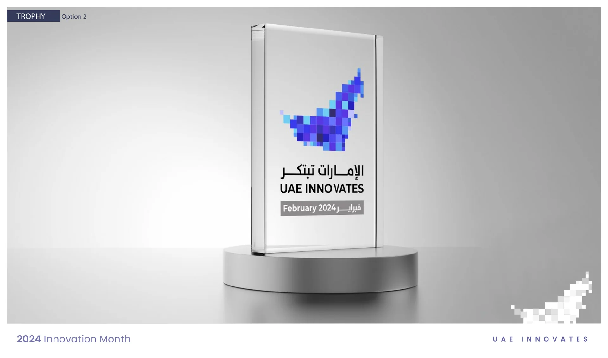
The details · 05 / 06The award.
A second design, in clear acrylic.From our presentation · 4 February 2024
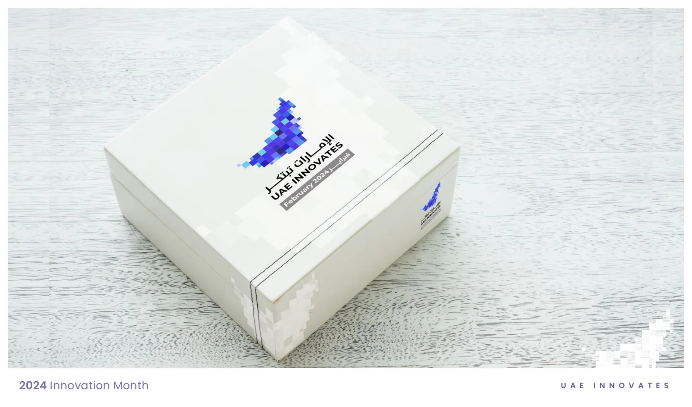
The details · 06 / 06The gift.
A box for every guest.From our presentation · 4 February 2024
Empty. Steel. Open.
The same forecourt, three times.
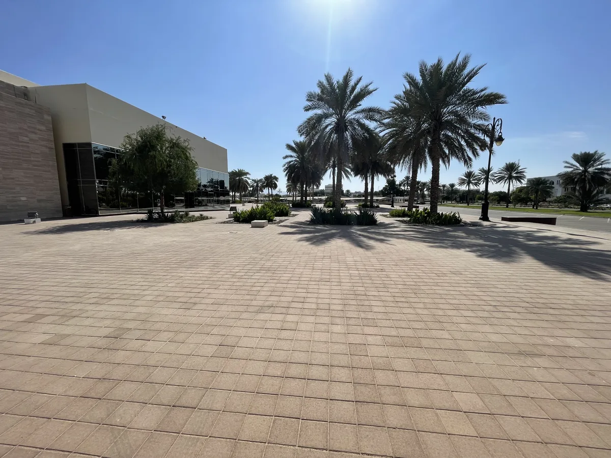
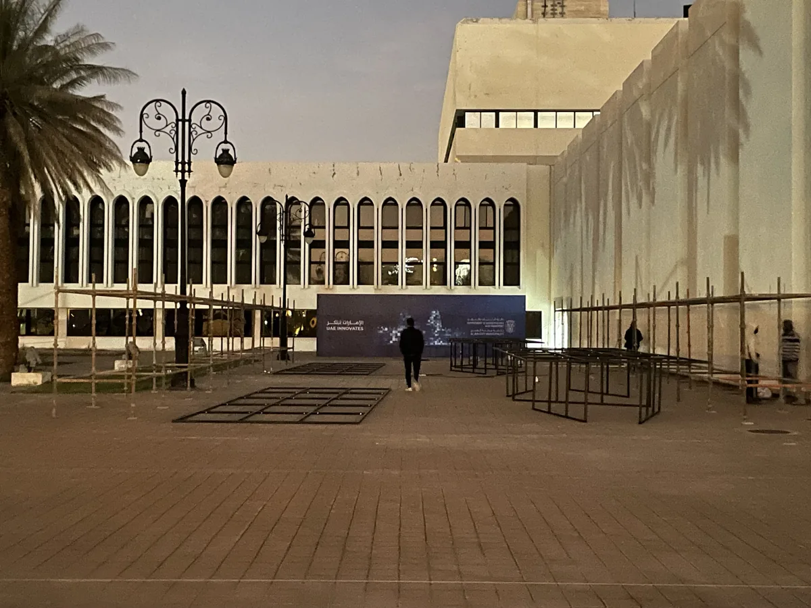
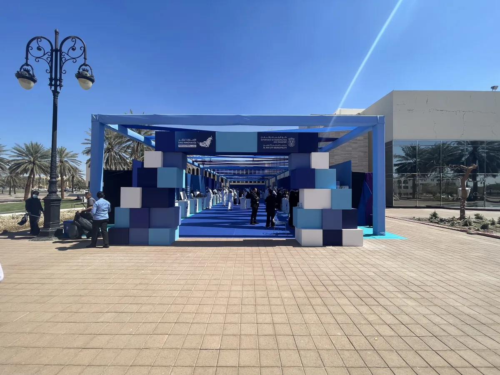
Executive Creative Director
Built with Halwan Advertising and Production.